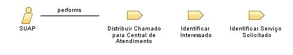

Role: SUAP
Sistema Unificado de Administração Pública que é utilizado no IFRN que detém a base de dados de alunos e servidores do instituto, como também, a disponibilização de vários serviços internos ao instituto, dentre eles a Central de Serviços.
Relationships

Primary Performs
Distribuir Chamado para Central de Atendimento Responsável
Identificar Interessado
Identificar Serviço Solicitado